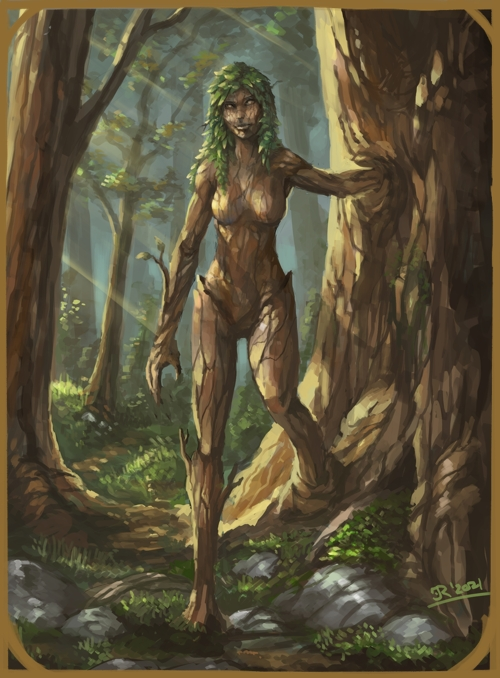

DRYAD
MEDIUM FAE

Daughters of trees and keeper of leaves. It is said that should a tree live long enough
near a wellspring of magic or ancient
land, it births a conciousness. These young tree-kin live and learn, much like their
treant elders, although instead of being the tree itself, will grow a body of
female statuesque form made of bark and moss that can detach and roam the land
as a separate branch. Shoud a dryad be threatened, she can merge back with her birthing tree,
as long as it still lives, for if it perishes, so shall she wither.
DRYAD CULTURE
Naturally jovial and kind, dryads are also inherently shy creatures. While among their
own kind or other fae-folk, dryads will have a natural instinct of motherly care for those smaller than it or
those living in their tree. Yet when other humanoid or evil creatures are neaby, they will
quickly meld within their tree and hide. Should they be too far from their tree,
they will attempt to flee, using violence only as a last resort. Should many dryads
arise and wake near each other, they form what is known as a ring of trees. This is most often
seen in elder forests near the more ancient fae, the Sei'yuulei (or Nymphs in the common
tongue). There they will heed the word of the Sei'yuulei all the while taking
the task upon themselves of caring for the beasts, insects and fae living nearby.
DRYAD RELIGION
Dryads are creatures of nature and therefore respect the
greater powers and spirits of nature. The dryads also praise the earthen lord Gor'kan
and worship the moon, Yshae, and the sun, Sylhael, like all other fae-folk.
RELIGION - YSHAE AND SYLHAEL, THE TWIN DIVINES
| Status | Name | Realms |
|---|
| Goddess | Yshae | Healing/Rain/Moonlight |
| God | Sylhael | Strength/Growth/Sunlight |
RELIGION - GOR'KAN, EARTH ELEMENTAL LORD
| Status | Name | Realms |
|---|
| Prime Elemental | Gor'kan | Earth/Ground |
DRYAD DIMORPHISMS
Dryads are always female of form and therefore have no dimorphisms.
DRYAD STATISTICS
ADULT
GENERAL ATTRIBUTES
| AGE | HEIGHT | SIZE | SIGHT |
| 15-1300 | ~5'10'' | Medium - 1x1 | -/10/4 |
MOVEMENT
| RUNNING | CLIMBING | SWIMMING | FLYING |
| 5 - Perfect | 3 - Good | 2 - Rough | - |
ABILITY SCORES
| STR | VIT | CON | AGI | DEX | INS | INT | WILL | WIS | CHA | BEA |
| 6 | 8 | 14 | 7 | 8 | 9 | 5 | 7 | 6 | 7 | 11 |
COMBAT ABILITY
| WOUNDS | INITIATIVE | ATTACK (MELEE) | ATTACK (RANGED) | MIGHT |
| 8 | 14 | 8 | 8 | 6 |
| DODGE | PARRY | DAMAGE | NAT. ARMOUR | PRESENCE (POWER) | PRESENCE (BEAUTY) |
| 8 | 4 | 2 | 2 | 7 | 9 |
NATURAL WEAPONS
| WEAPON | TYPE | MIGHT | DAMAGE | ADDITIONAL |
| Twisted Branch | Primary | +1 | +1 | - |